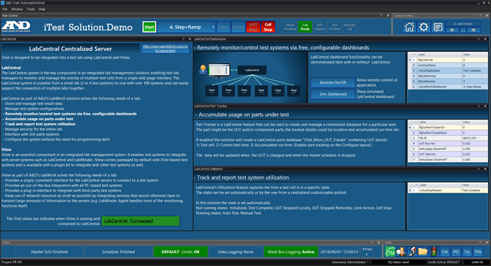

iTest User's Guide
Solution.Demo Quick Start Guide
Product Version 4.5
Prepared By
ADT Software Engineering
A&D Confidential Document Distributable only to A&D Customers
Copyright A&D Company, Limited
A&D Technology Inc.
Solution.Demo is the default iTest solution that demonstrates the use of major or new application features. You can use it as a base solution to perform modifications for a unique customized solution, or you can use the panels and buttons to test different functionality. Solution.Demo for iTest 3.8 focuses on layout configurations, test control, data collection and analysis, system flexibility and extensibility. Panels contain multiple display objects with properties and channels set up for use. Some of these properties can be set dynamically, allowing display behavior to change with the test sequence.
The purpose of the quick start guide is to walk you through the use of Solution.Demo's main interface and present the extensibility of AutomationPanel's features.
When you launch Solution.Demo in AutomationPanel, the first screen that displays is the introduction screen. This contains slides featuring content about iTest, Solution.Demo operation, the user interface, test control, data collection and analysis, and even more. If you close this layout, but want to see it at a later time, just click the AND logo located in the upper-left corner of the interface.
Intro Screen
AND Logo
The main layout is the primary screen that displays once you launch AutomationPanel and have closed the introduction dialog.
Main Layout
1. Chart data: A visual representation of the test data as a chart. The bottom white line represents the error value, where as the red and blue lines represent the data for demand and feedback.
2. Test cell satus: This panel represents the status of the test cell equipment. The panel displays and updates depending on when the test equipment and UUT are off or running.
3. Controls: The panel used to select different tests to run on the system as well as start, pause, resume, and stop the test. You can use this panel to stop the UUT and the test cell. Directly beneath these buttons are settings for variance factor, loop count and auxiliary input. Modifying the variance factor and loop count settings will impact the outcome of the tests e.g., increasing the variance will increase the error.
4. Channel data: This is a panel that has been pre-configured to display UUT details and test details. Click the More button to display a list of additional channels and their values.
5. Layout navigation: The buttons in this section enable you to navigate between layouts, return to the main layout, perform quick configurations, view messages, and display a list of all layouts in the solution.
6. Gauges and bar control: The gauge and bar panels present an additional view of live data during runtime.
7. Chart controls: The chart controls enable you to pause and resume the chart display while a test is running. When the test has finished executing you can clear the chart details to return to a blank display.
8. Tools: The tools section contains icons for standalone tools, such as Mailer, Test Manager, AlarmStatus, PID Tune, etc. Clicking any of these icons quickly opens the application.
Solution.Demo for iTest 3.8 features many different use cases for AutomationPanel configurations. This document focuses on the main layout; however, each layout contains unique configurations that demonstrate the extensibility of AutomationPanel. This layout uses a set of interconnected panels, which can be used to select and start tests as well as view data values from the test.
To use Solution.Demo to run a test, do the following:
Each section below details the different ways data can be communicated in the various panels on the layout.
In this solution, the Data Panel is designed to communicate test system information and test details. The data in the panel updates in real-time as the test is running. It displays information such as the master schedule runtime, schedule step, schedule name, log file, project folder, and the demand and error values. You can click the More button to display a Channel List panel with other associated channels and their current values.
Data Panel
More Button
Solution.Demo's Main layout contains two Chart panels to represent live data values from the running test: the Strip Chart and the XY Plot. The Strip Chart data is graphed at a rate of 10Hz; its white line represents the value of Error, where as the blue and red lines represent Demand versus Feedback. The XY Plot evaluates the level of Error against the Demand value.
Chart Panel
The Gauge panel represents another way of visually communicating test data. As the values for the Demand, Feedback, and Error channels change, the location of the needles on the different gauges update accordingly. In the image below, Demand and Error have specified limits which are indicated by the red, yellow, and green colors.
Gauge Panel
The Bar panel is similar to the Gauge panel; it communicates channel values for Demand, Feedback, and Error and visually displays the limit ranges for these channels.
Bar Panel
To navigate to the other layouts in Solution.Demo, locate the Layout Control panel situated in top-right corner of the interface. You can click the right arrow icon to navigate to the next layout, or you can click the dotted icon to display the list of layouts in the solution. To return to the primary layout, click the home icon. Refer to the table below for complete descriptions of each button.
Layout Control
Layout Control Descriptions
| Button | Description |
| Returns to the home page (main layout). | |
| Launches the quick configuration dialog, which can be used to modify the unit under test, reset the UUT run hours, test hours, and file run number, and change project folder. | |
| Opens the messages layout, which can be used to view system and operator messages, the system log viewer, and events. | |
| Returns to the previously opened layout. | |
| Opens the next layout | |
| Displays the list of available layouts in the solution. | |
| Displays the name of the currently active layout. This is an indicator tile, not a button, and it cannot be pressed. |
You can use the other layouts in AutomationPanel to view and run the same tests with different configurations. The test run in the previous section, Ramp+TransF2+Loop, is actually a master schedule and can be run in the master schedule layout tab of Solution.Demo. In this layout, the master schedule panel is connected to a chart panel, enabling you to view the execution of the separate master schedule steps and then view the live data plotted on the graph.
Master Schedule Layout
The Schedule Layout enables you to view the progress of an individual schedule as it is currently being executed in the main display layout or the Master Schedule layout. From one of these layouts, start a schedule test and then navigate to the Schedule layout. The data in the Schedule Viewer panel updates with the information from the running schedule and the graphs are updated to visually communicate the live data.
Schedule Layout
You can also control the schedule from this layout, by clicking the Show Control Schedule button in the Schedule Control Override panel. This causes the following header to be displayed in the Schedule Viewer panel with the buttons for selecting a master schedule, as well as for starting, stopping, pausing or incrementing through the schedule.
Schedule Viewer Header
The Configure Layout contains various panels that you can use to configure the unit under test (UUT), data project folders and file data, as well as schedule continuation. A brief description of each configuration's purpose is described in the panel to its right.
Configuration Layout
The Data Analysis Layout contains various tools for viewing live and logged data, including:
Data Analysis Layout
The LabCentral layout provides an overview of LabCentral as well as using it to remotely monitor and control test systems, accumulate data for parts under tests, and track and report test system utilization.
LabCentral Layout

This layout contains the Messages Panel that communicates the following information:
Messages Panel
The Browser Layout enables you to access the internet such as LabCentral or other webpages.
Browser Layout
The PID Control Layout demonstrates the use of an iTest PID control within the AutomationPanel interface.
PID Control Layout
By default, the settings are configured so that the PD control is On. To turn the PID control off, click the PID Control Off button below the Chart Panel.
Turn Control On/Off Button
The disturbance is visible in the graph as soon as the button to turn off the PID control is clicked.
Control Off
You can modify the setpoint, disturbance rate, and disturbance amplitude using the bar panels to see how the change in values is visually reflected in the Chart Panel.
Setpoint and Disturbance Bars
From this layout you can also directly access the PID Tune utility. Navigate to the Tools Panel in the bottom-right corner of the AutomationPanel layout and click the PID button.
PID Tune Utility
This launches the PID Tune utility.
Empty PID Tune
Click the Open toolbar option. This opens the File Browser dialog. Select the file ClosedLoop.Dmo1 and click Open.
Windows File Browser
The file is loaded and the data begins to display in the graph. You can use the controls in the PID Tune utility to modify the values in the utility as well as in AutomationPanel.
Loaded File
The Miscellaneous Layout contains a variety of information such as the capabilities of the solution, the application schematic, Python scripting example, fault simulations and FlexEdit information.
Miscellaneous Layout
The Blank Layout is a completely empty layout. You can add panels to this layout and customize it as necessary.